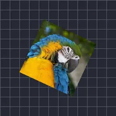

Balanço

Gira a camada de um lado para o outro entre dois ângulos.
O Swing gira uma camada para frente e para trás entre Ângulo 1 e Ângulo 2, Frequência vezes por segundo. Use Onda para escolher Seno (suave) ou Triangular (velocidade constante), e Fase para deslocar camadas umas em relação às outras.
Configurações
| Configuração | Tipo | Intervalo | Padrão |
|---|---|---|---|
| Frequência | Número | 0.1 Hz a 16 Hz | 2 Hz |
| Ângulo 1 | Ângulo | -3600° a 3600° | -30° |
| Ângulo 2 | Ângulo | -3600° a 3600° | 30° |
| Fase | Número | 0 a 2 | 0 |
| Onda | Opção | Senoidal, Triangular | Senoidal |